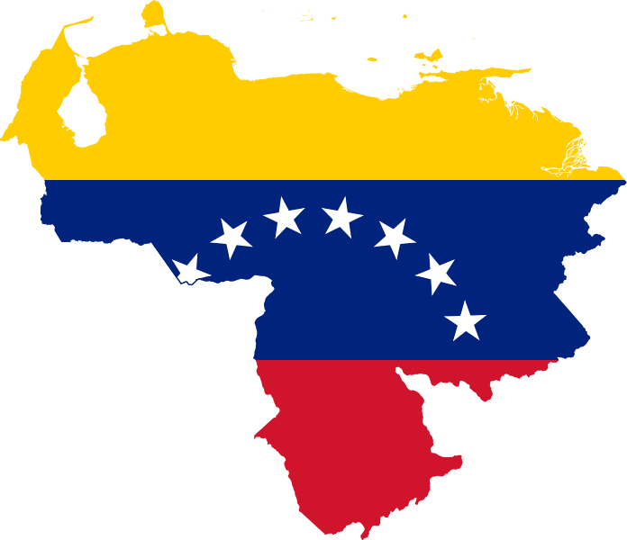
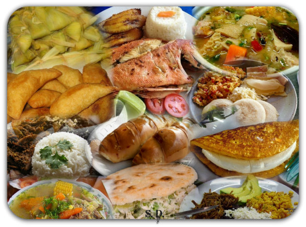

VENEZUELA
(País de origen de mi abuela Elena y mi papá)

La República Bolivariana de Venezuela, es un país de América situado en la parte septentrional de América del Sur, constituido por una parte continental y por un gran número de islas pequeñas e islotes en el mar Caribe, cuya capital y mayor aglomeración urbana es la ciudad de Caracas. El territorio continental limita al norte con el mar Caribe y el océano Atlántico, al oeste con Colombia, al sur con Brasil y por el este con Guyana.
Su economía está basada primordialmente en la extracción y refinación del petróleo y otros minerales, así como actividades agropecuarias e industriales.
Presenta una geografía irregular que combina regiones áridas, selva, extensas sabanas en los Llanos y ambientes andinos. El país posee las mayores reservas de petróleo a nivel mundial, las octavas de gas natural, y la decimoquinto en cuanto a oro. Su población alcanzó en 2012 los 30 000 000 de habitantes, y es ampliamente diversa, porque integra etnias europeas y mestizas, y en menor grado africanas, indígenas y asiáticas.
Políticamente, está constituida como un Estado federal democrático, social, de derecho y de justicia, autónomo y soberano. Se establece como forma de Gobierno, una República presidencialista, encabezada por el Presidente de la República quien asumiría como Jefe del Estado y Jefe del Poder Ejecutivo Nacional a la vez. La soberanía, la cual reside en el pueblo, se ejerce de dos maneras: directamente a través de la Constitución misma y de la ley, e indirectamente, mediante el sufragio, por el Poder Público, cuyos componentes están sometidos a dicha soberanía popular y se deben a ella. Todos los entes públicos están sujetos a lo previsto en esta Constitución. El Presidente tiene la facultad de dirigir las acciones del Gobierno.
La Constitución de Venezuela reconoce al español y las lenguas de los pueblos indígenas venezolanos como oficiales. El español es la lengua materna de la mayoría de los venezolanos. La variante de español empleada es el español venezolano, el cual a su vez se divide en varios dialectos.
La Constitución Nacional establece la libertad de culto. Los cristianos conforman más del 80% de la población
Como parte integral de la cultura venezolana, las artes culinarias del país también se caracterizan por ser un resultante de la herencia de la Gran Colombia compartida, y aparte de una mezcla entre elementos indígenas y europeos. Emplean mayormente cereales destacando entre ellos el maíz, animales cazados, fauna marina, verduras y productos lácteos como el queso. Se consideran como platos nacionales a la hallaca (una masa de harina de maíz rellena de varios ingredientes y envuelta en hojas de plátano para ser hervida posteriormente, preparada en época navideña), el pabellón criollo (compuesto por arroz, carne mechada, caraotas negras (frijol), tajadas y en ocasiones huevo frito), y la arepa (torta circular de harina de maíz, de preparación sujeta tanto a la región donde se cocine como al gusto del consumidor) La arepa, que se cocina en budares, ha sido una de las herencias compartidas con la cocina colombiana, siendo una herencia común de ambas naciones.
La cocina venezolana posee otros platos muy conocidos como las cachapas, el chivo en coco, la reina pepeada, la carne en vara, el asado negro, la parrilla criolla, sopa de mondongo, pizca andina y bollos pelones entre otros.

La comunidad judía de Venezuela
Historia
La presencia de judíos en Venezuela remonta al siglo XVII cuando se establecieron un pequeño grupo en Tucacas, en el año de 1693.Sin embargo, esta comunidad desaparece y no fue hasta el año 1821que se registra el primer establecimiento permanente de judíos en Venezuela y se realizó en la antigua ciudad costera de Coro, no muy distante de la isla de Curazao. Esto sucede al poco tiempo de constituirse Venezuela en país independiente. El grupo estaba constituido por judíos sefardíes. A partir de 1830 cuando se promulgaron leyes que garantizaban la libertad de cultos, los judíos pudieron establecerse en el país.
En 1844, grupos de judíos marroquíes llegaron a la ciudad de Barcelona y, para 1875 se les concedió permiso para establecer un cementerio judío.
Además de Coro, y después Barcelona, los judíos se ubicaron en otras ciudades costeras como Puerto Cabello, Maracaibo y, finalmente, en Caracas.
Según un censo nacional tomado en el final del siglo XIX, solo 247 judíos vivieron en Venezuela como ciudadanos para 1891.
En 1907, se creó la Sociedad de Beneficencia Israelita, que cambió en 1919 su nombre a Sociedad del Israelita de Venezuela, como organización para aglutinar a todos los judíos que se fueron dispersando a través de varias ciudades y pueblos del país. Los servicios judíos de rezo y días sagrados ocurrían en casas pequeñas en Caracas y ciudades como Los Teques y La Guaira.
No fue hasta la llegada de judíos de Europa del Este escapando de las distintas guerras mundiales y norafricanos entre los años 20 y 30 del siglo XX, que la comunidad judía comenzó a desarrollarse completamente. (Justamente mi abuelo Paul, papá de mi abuela Elena, llega por estos años a Venezuela).
El número de ciudadanos judíos se incrementó de 475 en 1917 a 882 para 1926. El número de judíos de Europa del este y central creció a partir de 1934.
A finales de la década de 1950, numerosos judíos marroquíes y de otras partes del mundo, como Egipto, Hungría e Israel, así como también de países de Latinoamérica, engrosaron el número de integrantes de la comunidad judía venezolana. Antes de 1950, la comunidad había crecido a alrededor de 6.000 personas. Con la salida del poder de Marcos Pérez Jiménez en 1958, más de 1.000 judíos entraron a Venezuela desde Egipto, Líbano, Siria, Salónica, Turquía, la Unión Soviética e incluso de Israel. Un número desconocido de judíos también inmigraron de otros países latinoamericanos, llegando a más de 15.000 por la década de los 70.
La población judía en Venezuela alcanzó un máximo de 45,000 personas, su mayoría estaba centrada en Caracas y con menor concentración en Maracaibo. La mayoría de los judíos de Venezuela son de primera o segunda generación.
Cuando el ex-presidente Hugo Chávez llegó al poder en el año 1999 había en Venezuela aproximadamente 22000 judíos. Más de la mitad de la comunidad ha emigrado en los últimos años. Sin embargo, nadie en la comunidad se atreve a lanzar un número sobre el total de judíos que ahora quedan.
Sistema educativo
La Comunidad mantiene el Sistema Educativo Comunitario (SEC) formado por un pre-escolar, una primaria y una secundaria que funcionan en los terrenos de Hebraica (el club), bajo el nombre de Unidad Educativa "Moral y Luces Herzl-Bialik". Un alto porcentaje de los niños y jóvenes en edad escolar están matriculados en el SEC. El Colegio Sinai, de corte más religioso, atiende a 150 alumnos. Existe también una Yeshiba y un Beit yaacob que son centro de estudios ortodoxos (Mahor haTora) para niños y niñas respectivamente, en los que estudian aproximadamente 200 alumnos y también funciona la Unidad Educativa Or Jabad de corte religioso donde estudian alrededor de 100 alumnos.
Vida religiosa
La vida religiosa es intensa y es atendida por 16 sinagogas, de las cuales las dos mayores son la Gran Sinagoga Tiferet Israel, de la AIV y la Sinagoga Adam y Clara Slimak, de la UIC. También funcionan sinagogas en Maracaibo, Porlamar, Valencia, Maracay y Puerto La Cruz. Existen en Caracas Yeshivot, Kolelin, carnicerías y panaderías Kasher.
La UIC y la AIV poseen panteones en varios cementerios de Caracas. El más antiguo cementerio judío todavía en uso en América está en Coro. La primera tumba data de 1832.
Para esta fecha (2018) se calcula que la cantidad de judíos viviendo en Venezuela estaría rondando los 4000.